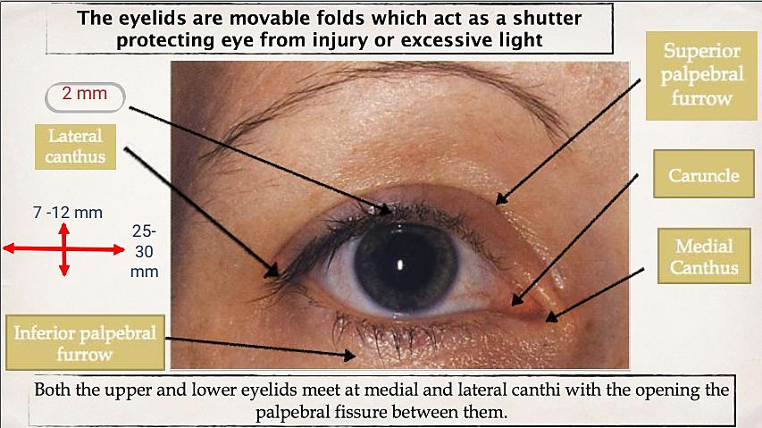

Part I · Gross anatomy
Gross anatomy of the eyelids
- The eyelids are two movable muco-cutaneous folds.
- The upper eyelid covers 1–2 mm from the upper part of the cornea.
- The lower eyelid is just below the cornea.
- The elliptical space when the eyelids are opened is called the palpebral fissure; its angles are called canthi.
- The medial canthus is rounded and surrounds the tear lake (Lacus lacrimalis) that contains the caruncle and the plica semilunaris.
- In the upper eyelid there is a transverse crease, usually lying 5 to 10 mm above the upper lid margin, representing the insertion of the levator aponeurosis.
Remember The upper lid normally overlaps the upper cornea by 1–2 mm; the lower lid rests just below the corneal margin.
